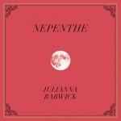
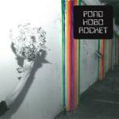
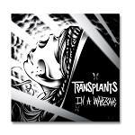
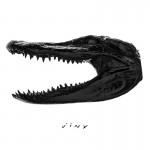

Music Reviews
-

David Lynch The Big Dream
David Lynch is no stranger to the world of music. Whether he's toiling with sound design on Eraserhead or creating the electronic nightmares found on 2010's Crazy Clown Time, Lynch has proven himself capable of creating... err.... something with mere aural elements. But is his latest effort really worth your time?
Andrew Ciraulo reviews... -
Whirr Around
Whirr have found the right blend of shoegaze and loudrock to create a sound that is chilling and stunningly gorgeous.
Bill Haff reviews... -

No Age An Object
No Age rejects the punk aspect of their earlier efforts with An Object, willing to change their narrative without disrupting their established parameters of noise.
Juan Edgardo Rodríguez wants this product... -

Julianna Barwick Nepenthe
Recorded in Reykjavík with Sigur Rós affiliate Alex Somers, Julianna Barwick adds new layers to her spine-tingling ambient vocal loops, submerging you in her opiatic clouds of sound.
Stephen Wragg reviews... -

Pond Hobo Rocket
File under: canned psychotic freakouts and carburetor turd.
Juan Edgardo Rodríguez reviews... -
Fuck Buttons Slow Focus
While it's always been best to just let yourself be pummeled by the gargantuan, climactic pieces crafted by electronic duo Fuck Buttons, the duo's latest LP gives listeners more reasons than ever to focus in on the little moments instead.
Peter Quinton scales the harrowing summit of Slow Focus, and can even see his house from up here! -
Emma Louise vs Head vs Heart
Emma Louise's debut album takes full advantage of her gorgeous voice, with fantastic melodies, touches of minimalism and beautiful harmonies. While the second half sometimes falls flat, this is the sound of an artist in full control of her vocals and her craft.
Joe Marvilli's head and heart are in agreement on this album... -

Transplants In A Warzone
Transplants have always been an unpredictable band, but does their third album follow suit?
John Grimley still can't get "Diamonds and Guns" out of his head... -

Big Black Cloud Black Friday
Black Friday, the latest album from Portland rock trio, Big Black Cloud, is an atonal salute to noise-addled eccentricity.
Sean Caldwell reviews... -

Weekend Jinx
Weekend's debut was so terrifyingly loud that it was almost impossible to tell how well their sound would hold up without walls of feedback coating everything. But the bands second release, Jinx, comes with plenty of hooks and atmosphere to back itself up without it.
Peter Quinton reviews some gloomy post punk for No Ripcord...